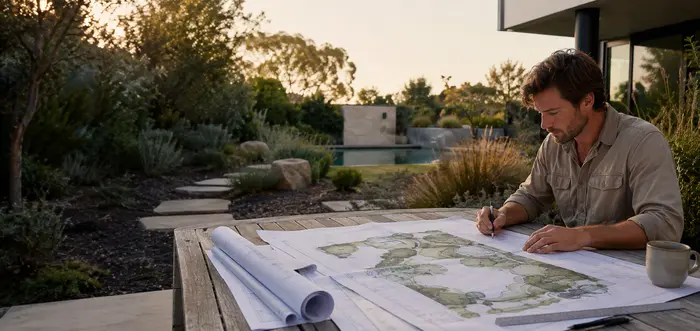
01
Landscape design
Site-led concepts and planting plans shaped around your property, lifestyle and Perth conditions.
Explore this servicePerth, Western Australia
Landscape design, construction and ongoing garden care from local landscapers in Perth—planned as one practical outdoor space and delivered with a clear scope.
What we do
Bring the essential parts of your outdoor project together—from the first layout decision to construction, planting and ongoing care.

Site-led concepts and planting plans shaped around your property, lifestyle and Perth conditions.
Explore this service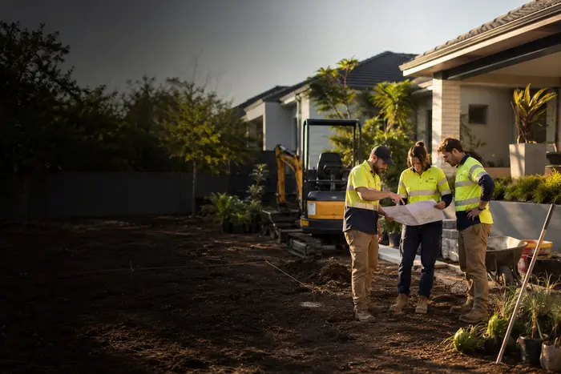
Coordinated construction for paving, retaining, planting, turf, irrigation and outdoor features.
Explore this service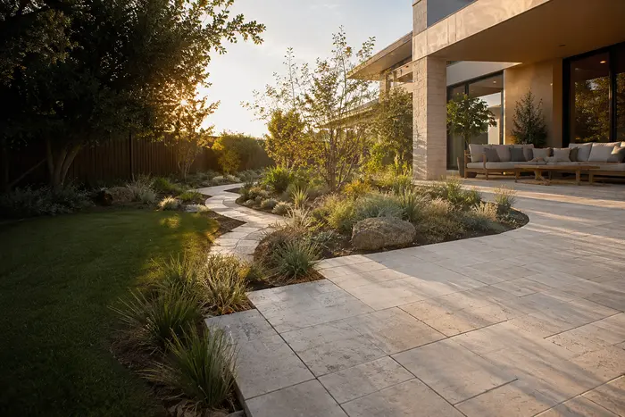
Durable paths, patios and garden structure installed with clean levels and practical finishes.
Explore this service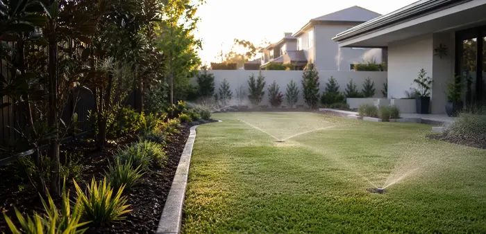
Lawns and efficient watering options selected for Perth's sandy soils and dry summers.
Explore this service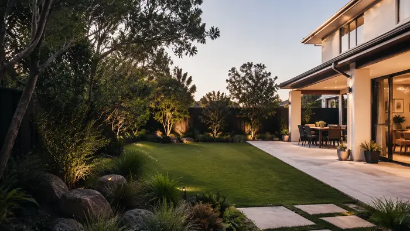
A focused refresh for tired front yards, backyards and outdoor areas that no longer work well.
Explore this service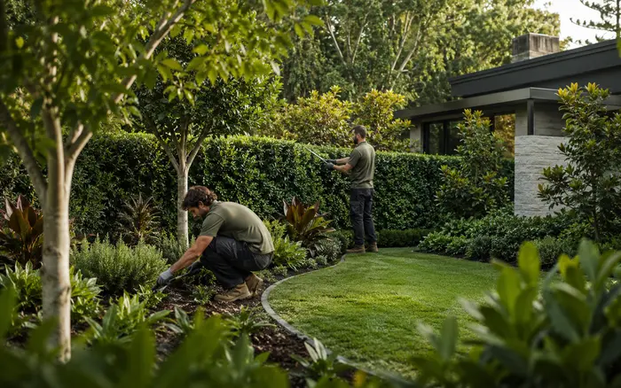
Scheduled care for gardens and landscapes that need consistent, practical attention.
Explore this service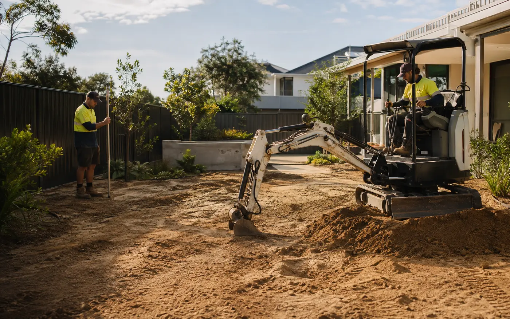
How the work comes together
A finished landscape depends on what happens before the final lawn, planting or paving is visible. Site access, ground preparation, levels and the order of work are considered around the agreed scope.
Featured transformation
A thoughtful layout can turn an underused yard into a more useful, welcoming extension of the home. Compare the space, flow and finish.
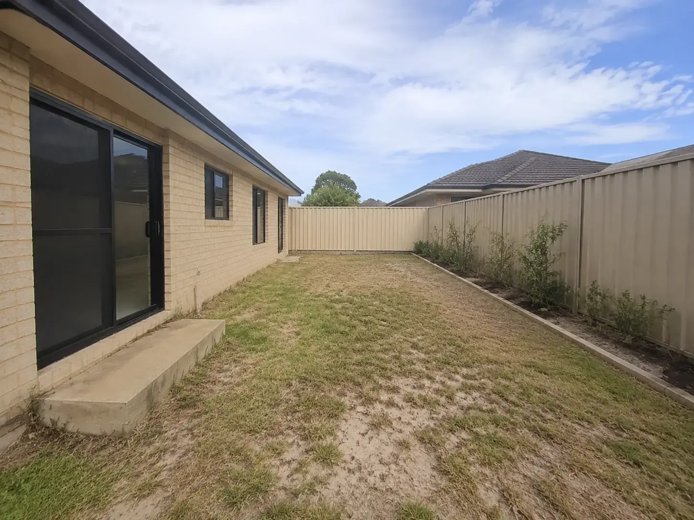
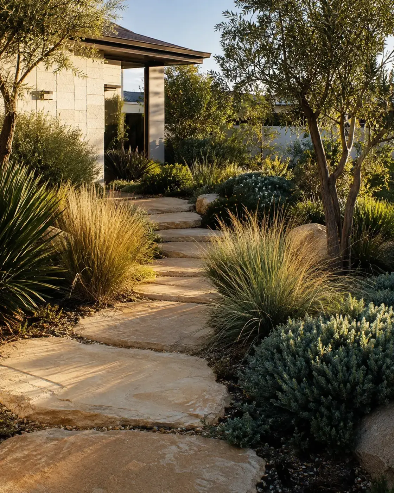
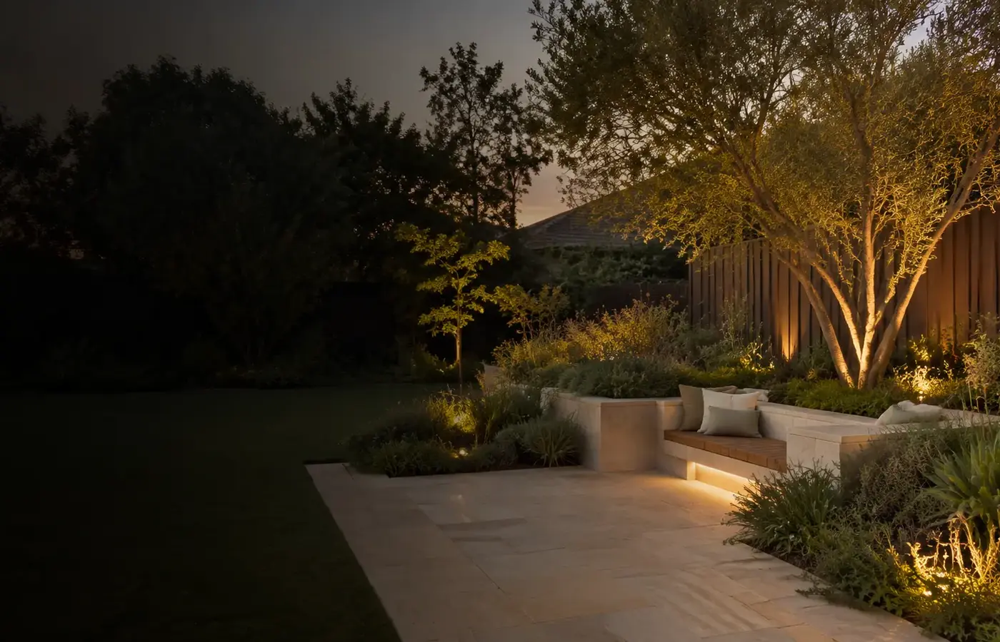
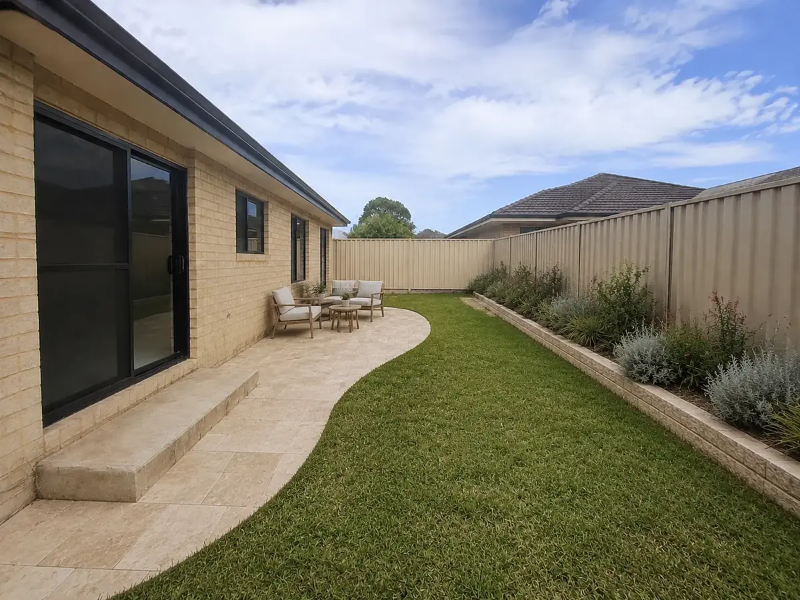
Why Dawson
A successful landscape connects access, planting, levels, materials and maintenance around the way the property needs to work.
How it works
A straightforward enquiry process helps define the right next step before work begins.
Share the property, suburb, what is not working and what you want the finished space to do.
Discuss priorities, timing and budget, then confirm the appropriate scope and quote process.
Deliver the agreed work with clear communication, a final walkthrough and practical care guidance.
Client feedback preview
This testimonial layout is ready for verified feedback, project type, Perth suburb and review source supplied before launch.
Project enquiry
Send a few details so Dawson can understand the project and respond with the most useful next step. No obligation and no pressure.
What happens next
Dawson can now review the project details and contact you about the next step.
Quick answers
Dawson services selected areas across Perth metro. Include your suburb in the enquiry and the team can confirm availability for your project.
Projects can bring together design, landscape construction, paving, planting, turf and irrigation. The exact scope is confirmed after the property and priorities are reviewed.
Send your suburb, required service, preferred timing and a short project description. Dawson can then review the enquiry and arrange the appropriate next conversation.
Plant selection, irrigation and material choices can be discussed with Perth conditions and future maintenance in mind.
Cost depends on access, levels, materials, planting, irrigation and the size of the scope. Sharing an approximate budget helps shape a realistic first conversation.
Ready to make more of your outdoors?